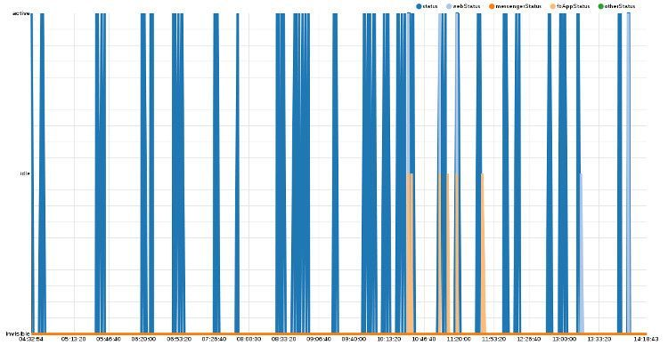

Facebook: la messagerie, un espion pour vos amis ?
Cet article se base sur les récents travaux d’Alexander Hogue, ayant voulu reproduire ses recherches ainsi que son expérience, je vous présente ici mes résultats…
Personne n’aime les petits pois !
Franchement vous aimez ça ? Vous en êtes sûr ? Je déteste les pois carottes, moins que les petits pois mais quand même. Facebook lui les aime, il nous en jette même au visage à chaque fois que nous allons sur le site…
Vous voyez ces petits pois verts à coté de vos contacts en ligne ? Vous êtes vous déjà demandé comment ils arrivent là ? Et les heures à coté de ceux déconnectés ? Quoi, ce n’est pas vous qui avez fait l’appel ?
Le plus simple serait de se dire « clic droit => Inspect element » et de regarder… allons y !
Dans l’inspector, rien d’intéressant, on voit juste le rendu visuel, la mise en page etc.
Le statut de nos « amis » étant sans cesse mis à jour, on va se tourner plutôt du coté réseau.
On y trouve des centaines de requêtes, avec un simple chargement de la page d’accueil j’en compte 235, en vrac :
- Js
- Png
- gif
- Json
- Jpeg
- html
- css
Pour ce qui est des html, css, gif, jpeg, png & css, rien d’intéressant, dans les js on trouve le comportement de la fenêtre de chat et ces messages types :
if (self.CavalryLogger) { CavalryLogger.start_js(["Pj81K"]); }
__d('ChatSidebarSheetChatReconnectMsg.react',['fbt','ChannelConstants','Link.react','ReactComponentWithPureRenderMixin','React'],
function a(b,c,d,e,f,g,h){'use strict';if(c.__markCompiled)c.__markCompiled();
var i=c('React').PropTypes,j=c('React').createClass({displayName:'ChatSidebarSheetChatReconnectMsg',
mixins:[c('ReactComponentWithPureRenderMixin')],propTypes:{msecs:i.number,onManuallyConnectClick:i.func},render:function(){var k=this.props.msecs;
if(k==null||false===navigator.onLine){return (c('React').createElement('div',
null,h._("Impossible de se connecter \u00e0 la discussion instantan\u00e9e. V\u00e9rifiez votre connexion Internet.")));}
else if(k>c('ChannelConstants').WARNING_COUNTDOWN_THRESHOLD_MSEC){return (c('React').createElement('div',null,
h._("Impossible de se connecter \u00e0 la discussion instantan\u00e9e. {try-again-link}",
[h.param('try-again-link',c('React').createElement(c('Link.react'),{className:'fbChatReconnectLink',onClick:this.props.onManuallyConnectClick},
h._("Veuillez r\u00e9essayer")))])));}
else if(k>1000){return (c('React').createElement('div',null,
h._("Impossible de se connecter \u00e0 la discussion instantan\u00e9e. Reconnexion dans {seconds} secondes...",[h.param('seconds',Math.floor(k/1000))])));}
else return (c('React').createElement('div',null,
h._("Impossible de se connecter \u00e0 la discussion instantan\u00e9e. Reconnexion...")));}});f.exports=j;},null);
Ils se ressemblent à peu prêt tous et gèrent les messages de type :
- Votre session a expiré, veuillez vous reconnecter.
- Facebook n’est pas disponible.
- Le chat est en cours de maintenance.
- Impossible de se connecter à la discussion instantanée, reconnexion dans $ secondes.
- etc…
Reste le json, et ces requêtes qui ne cessent de s’accumuler:
Qu’est ce qui se trouve dans ces « pull » ?
On en ouvre un :
for (;;); {"t":"msg","seq":7,"u":CENSURE"ms":[{"overlay":{"CENSURE":{"la":CENSURE"p":{"otherStatus":"invisible","webStatus":"invisible","messengerStatus":"idle","fbAppStatus":"active","status":"active"},"s":"push","vc":10,"ol":0,"a":2}},"type":"buddylist_overlay"},
---
{"otherStatus":"invisible","webStatus":"invisible","messengerStatus":"idle","fbAppStatus":"idle","status":"invisible"},"s":"push","vc":10,"ol":-1,"a":0}},"type":"buddylist_overlay"},{"overlay":{"CENSURE"p":{"otherStatus":"invisible","webStatus":"invisible","messengerStatus":"idle","fbAppStatus":"invisible","status":"invisible"},"s":"push","vc":10,"ol":-1,"a":0}},"type":"buddylist_overlay"}]}
Bingo, notez que j’ai supprimé ce qui n’était pas intéressant et ce qui contient les IDs de mes contacts.
Ce qui nous intéresse ici c’est la dernière partie du code, qu’est ce qu’on y voit ?
- les mentions « la » : Heure Unix
- messengerStatus: Statut de votre contact sur messenger mobile.
- FbAppStatus: Statut sur l’application Facebook
- webStatus: Statut sur le site web
- otherStatus: Joker ? Sûrement relié aux applications externes à FB utilisant leur API…
Bref, c’est un bon début, mais pourquoi ne pas aller plus loin ? On a quoi là exactement ?
- Une personne
- Une heure
- Si elle online, offline ou idle (inactive)
- Si elle l’est sur la version web, mobile ou messenger
Rien de croustillant ici, vu que vous savez déjà leur statut en regardant la barre latérale. Mais si quelqu’un restait à regarder et noter les changements H24 ?
C’est ici qu’intervient la magie de l’informatique (ou le cauchemar, on ne sait pas trop comment parler de ça maintenant…)
J’ai un serpent dans ma botte !
Évidemment, on ne va pas rester à noter ces changements (ni même embaucher quelqu’un pour le faire à notre place, je vous vois venir), c’est Python qui va s’en charger.
Le script peut tourner H24 en utilisant un cookie de ma session FB pour se connecter ainsi que les requêtes pull pour enregistrer pour chacun de mes contacts :
- les statuts
- leurs changements
- leurs heures
Une idée de ce que j’ai récolté :
Chaque fichier correspondant à une personne dans mes amis.
137 amis, 137 fichiers générés, le compte est bon.
Un aperçu du contenu de chacun d’entre eux :
On voit donc qu’on récupère bien l’heure ainsi que les statuts des différents moyens de connexion.
C’est pas très visuel tout ça !
On va faire des graphs, ne vous inquiétez pas. Merci à Alexander qui a je cite « passé 3 fois plus de temps à trouver un moyen de faire des graphiques des résultats qu’à écrire le code pour les récupérer » rien que ça.
Pour vous donner une idée, imaginez vous après votre journée de travail, à 23h, avec 6 terminaux et 50 onglets internet ouverts, après avoir testé 3 librairies graphiques différentes pour faire votre rendu…
Bref, qu’est ce que ça donne ?
Pour ce test j’ai donc laissé le script tourner hier de ~ 10h30 à ~ 00h15 soit environ 12h, pour 137 amis j’ai généré un total de 10MB de fichiers texte.
Notez que les heures affichées sur les screens suivants sont en retard de 10h sur l’heure réelle.
Exemples :
Ici nous pouvons voir que cette personne n’utilise pas facebook sur son téléphone, ou en tout cas pas via les applications. Et qu’hier elle s’est connectée de 17h30 à 18h15 puis s’est reconnectée de 22h à 23h30 pour finir par revenir à 00h.
De même pour celle-ci, pas d’utilisation de facebook sur mobile par contre une utilisation différente de Facebook, une connexion unique dans la journée de 14h30 à 16h, puis un check rapide à 18h pour finir par ne plus revenir de la journée.

Ici on a quelqu’un qui ne se sert toujours pas de messenger mobile mais un peu de l’appli FB simple. La différence avec les 2 personnes précédentes est intéressante et j’en viens à me demander si on ne pourrait pas faire une étude sociologique grâce à cela, bref, revenons à nos moutons. Celle-ci se connecte pour de plus courtes durées mais plus fréquemment. Au passage, je commence à me demander si beaucoup de personnes utilisent l’application messenger ?
Je pourrais continuer pour chacun de mes contacts mais cela ne serait guère intéressant, vous avez compris le principe.
Est ce que je peux empêcher quelqu’un de faire ça ?
Le seul moyen de ne pas se faire stalker grâce à ça serait de faire en sorte d’apparaitre toujours En ligne ou Hors ligne. Notez que malgré cela vos changements de statuts sur Messenger eux s’afficheront toujours séparément.
L’utilisation du script vu dans l’article est lui même une solution étant donné qu’il utilise notre cookie, nous apparaissons donc en ligne H24, nous pourrions donc en faire une variante mais ne servant pas à enregistrer les statuts de nos amis mais juste à nous faire apparaitre en ligne…
Est ce que c’est assez grave pour vous forcer à laisser un ordinateur allumer H24 uniquement pour cela ? Je ne pense pas.
Il est aussi possible de tout simplement désactiver la messagerie instantané, vous masquerez alors votre statut. Si vous optez pour cette solution et utilisez l’application messenger, vous devrez aussi faire le réglage sur celle-ci.
Facebook en pense quoi ?
Actuellement je n’ai pas la réponse, dans tous les cas notez que tout le procédé expliqué et mis en place ici est réglo si on se réfère aux Termes / Conditions de Service de Facebook (TOS / Terms of Service en VO).
Edit : Je ne sais pas si cela a été rajouté récemment ou si j’avais lu trop rapidement les TOS mais en retournant les lire je suis tombé sur cette phrase:
Vous n’obtiendrez pas d’informations concernant des internautes ni les contenus qu’ils publient, et n’accéderez pas à Facebook à l’aide de méthodes automatisées (telles que robots, araignées, etc.) sans notre permission préalable.
Je vais donc finir comme d’autres commencent :